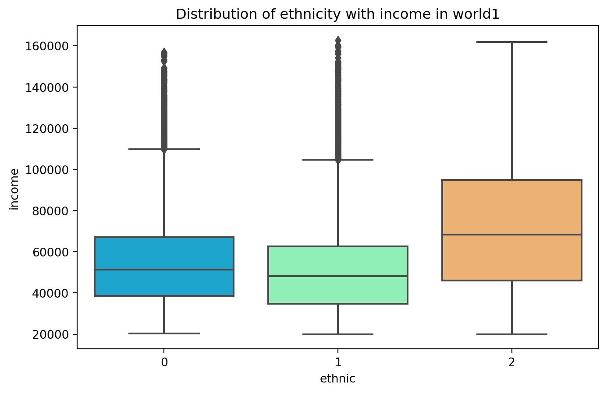

import numpy as np
import pandas as pd
import matplotlib.pyplot as plt
import seaborn as sns
#import rfit
#world1 = rfit.dfapi('World1', 'id')
#world1.to_csv("world1.csv")
world1 = pd.read_csv("world1.csv", index_col="id") # use this instead of hitting the server if csv is on local
#world2 = rfit.dfapi('World2', 'id')
#world2.to_csv("world2.csv")
world2 = pd.read_csv("world2.csv", index_col="id") # use this instead of hitting the server if csv is on localUtopian World
My definition of Utopia
Utopia is a state of complete ideality. Definition of ideality or utopia can be different for every individual. I feel a world can be called an Utopian world based on following factors:
1. A basic elementary education for everyone.
2. Equal pay for all genders and ethnic groups.
3. Equal job opportunities for all genders and ethnic groups.
4. An ideal gender ratio of 1, which means that population of females is equal to the population of males.
5. Healthy citizens, that means high average lifespan of individual.
We will first try to understand our dataset by printing out their head().
print("Values of world1")
print(world1.head())
print("Values of world2")
print(world2.head())Values of world1
age00 education marital gender ethnic industry income00
id
0 51.965 17 0 1 0 5 76110.0
1 41.807 12 1 0 0 1 43216.0
2 36.331 12 1 0 1 3 52118.0
3 56.758 9 1 1 2 2 47770.0
4 31.051 14 0 0 0 0 34197.0
Values of world2
age00 education marital gender ethnic industry income00
id
0 34.629 12 0 0 2 4 52533.0
1 48.403 16 1 1 1 0 29507.0
2 50.327 14 1 1 2 7 122156.0
3 45.059 11 1 1 1 2 53249.0
4 59.616 16 0 1 0 4 75917.0- age: the age at the time of creation. This is only the population from age 30-60.
- education: years of education they have had. Education assumed to have stopped. A static data column.
- marital: 0-never married, 1-married, 2-divorced, 3-widowed
- gender: 0-female, 1-male
- ethnic: 0, 1, 2
- income: annual income at the time of creation
- industry: (ordered with increasing average annual salary, according to govt data.)
- leisure n hospitality
- retail
- Education
- Health
- construction
- manufacturing
- professional n business
- finance
- leisure n hospitality
We have total of 7 variables, out of these 3 are numeric variables and 4 are categorical variables.
Numeric variables: age, education, income
Categorical variables: marital, gender, ethnic, industry.
I will change age00 to age and income00 to income for convenience.
# renaming age00 and income00 to age and income respectively.
world1 = world1.rename(columns={"age00": "age", "income00": "income"})
world2 = world2.rename(columns={"age00": "age", "income00": "income"})To analyze age variable more and its effect on different variables, I will divide age into three categories as per following condition and create a new column:
- 30-40 age -> young people
- 40-50 age -> middle aged people
- 50-60 age -> old aged people
def age_group(age):
ageGroup = 'Young' if age < 40 else 'Mid' if age < 50 else 'Old'
return ageGroup
world1['ageGroup'] = world1['age'].apply(age_group)
world2['ageGroup'] = world2['age'].apply(age_group)Now to check what all variables are highly correlated, we will build a correlation matrix.
We are mostly interested in income, ethnicity, gender, and age.
ax = sns.heatmap(world1.corr(), annot=True)
plt.title("Correlation matrix of all variables in world1")Text(0.5, 1.0, 'Correlation matrix of all variables in world1')ax = sns.heatmap(world2.corr(), annot=True)
plt.title("Correlation matrix of all variables in world2")Text(0.5, 1.0, 'Correlation matrix of all variables in world2')From the correlation matrix, world1 and world2 have following significant differences in correlation of variables
- industry - gender
- industry - ethnic
- income - gender
- income - ethnic
Education Level
To call a world an Utopian world, a basic education should be imparted to everyone.
I will define basic education as a minimum education of 10 years for my analysis.
We will check the boxplot of ageGroup with education
to check the level of education for different age groups in both the worlds
plt.figure(figsize=(8,5))
sns.boxplot(x='ageGroup', y='education', data=world1, palette='rainbow')
plt.title("Boxplot of education by ageGroup in world1")Text(0.5, 1.0, 'Boxplot of education by ageGroup in world1')sns.boxplot(x='ageGroup', y='education', data=world2, palette='rainbow')
plt.title("Boxplot of education by ageGroup in world2")Text(0.5, 1.0, 'Boxplot of education by ageGroup in world2')Plots are exactly identical for both the worlds and for each ageGroup.
Both the worlds do not exhibit Utopian state as still a part of population is below the basic factor of education (minimum education of 10 years). Although majority of population is having the basic education but still it does not reflect the ideal state of education level.
To get a numeric idea of people who did not get basic education in both the worlds, we will count them:
world1_edu_less_bool = world1['education'] < 10
world1_edu_less_df = world1[world1_edu_less_bool]
world2_edu_less_bool = world2['education'] < 10
world2_edu_less_df = world2[world2_edu_less_bool]
len_w1 = len(world1)
len_w2 = len(world2)
print("Number of people not having basic education in world1:", len(world1_edu_less_df))
print("Number of people not having basic education in world2:", len(world2_edu_less_df))
print("Percentage of people not having basic education in world1:", (len(world1_edu_less_df)/len_w1)*100)
print("Percentage of people not having basic education in world2:", (len(world2_edu_less_df)/len_w2)*100)Number of people not having basic education in world1: 604
Number of people not having basic education in world2: 520
Percentage of people not having basic education in world1: 2.5166666666666666
Percentage of people not having basic education in world2: 2.166666666666667There is approximately around 2.5% population in both the worlds, which does not have basic level of education.
This percentage is not huge, but in terms of education, we should not ignore this factor.
sns.countplot( x="education", data=world1_edu_less_df)
plt.title("histogram of frequency of each education in world1")Text(0.5, 1.0, 'histogram of frequency of each education in world1')sns.countplot( x="education", data=world2_edu_less_df)
plt.title("histogram of frequency of each education in world2")Text(0.5, 1.0, 'histogram of frequency of each education in world2')From the histogram plots, it is quite evident that there are approximately 150 people in both the worlds who do not have education at all.
This does not reflect the state of Utopia at all.
Hence, both the worlds are not Utopian worlds when it comes to education level of population.
Industry and gender
We will first analyze the relation between industry and gender
industry and gender are both categorical variables
sns.countplot(x="industry", hue="gender", data=world1)
plt.title("histogram of frequency of industry color coded by gender of world1")Text(0.5, 1.0, 'histogram of frequency of industry color coded by gender of world1')sns.countplot(x="industry", hue="gender", data=world2)
plt.title("histogram of frequency of industry color coded by gender of world2")Text(0.5, 1.0, 'histogram of frequency of industry color coded by gender of world2')When analyzing world1 plot,
we can see that males dominate Industry 4 (construction), 6 (professional n business) and 7 (finance) whereas females dominate Industry 0 (leisure n hospitality), 1 (retail),2 (Education) and 3 (Health).
This observation does not align well with our definition of Utopia as job opportunities are not equal for both the genders.
this contrasting difference is not observed in world2
there are some industries in which a minor difference is observed between job count of different genders but the difference is very minor.
This observation is very close to the ideal state of job opportunities for each gender.
So, job opportunities in different industries inside world2 are more fair and both the genders get almost equal opportunities for different jobs.
Hence, world2 is very well aligned with the ideals of Utopian world.
And world1 does not align well with the ideals of Utopian world.
Industry and ethnicity
Now we will compare industry and ethnicity of citizens
Again, both industry and ethnicity are categorical variables.
sns.countplot(x="industry", hue="ethnic", data=world1)
plt.title("histogram of frequency of industry color coded by ethnicity of world1")Text(0.5, 1.0, 'histogram of frequency of industry color coded by ethnicity of world1')sns.countplot(x="industry", hue="ethnic", data=world2)
plt.title("histogram of frequency of industry color coded by ethnicity of world2")Text(0.5, 1.0, 'histogram of frequency of industry color coded by ethnicity of world2')When analyzing world1 plot, Job distributions are not even for different ethnicities in world1. Job count in industry 0, 1, 3 and 4 for ethnicity2 is lowest whereas, ethnicity2 dominates in industry 5, 6, and 7.
When analyzing world2, job distributions across different ethnicities are very even. Every ethnic group has almost the same job count in every industry. Very minor differences are there, but still very evenly distributed.
World2 is again very impartial to ethnic groups when it came to job opportunities. So, world2 is aligning well with the state of Utopia whereas world1 does not.
Income with gender
We will analyze income of citizens with their gender
income is a numerical variable whereas gender is a categorical variable.
plt.figure(figsize=(8,5))
sns.boxplot(x='gender', y='income', data=world1, palette='rainbow')
plt.title("Distribution of gender with income in world1")Text(0.5, 1.0, 'Distribution of gender with income in world1')plt.figure(figsize=(8,5))
sns.boxplot(x='gender', y='income', data=world2, palette='rainbow')
plt.title("Distribution of gender with income in world2")Text(0.5, 1.0, 'Distribution of gender with income in world2')From the boxplot of world1, we can see that male population income is higher as compared female population income. Boxplot of world2 shows even distribution of income in male and female population.
World1 does not exhibit ideality of an Utopian world, whereas world2 shows the ideality of an Utopian world.
Gender Ratio
We will calculate the gender ratio (male_population/female_population) and compare for the two worlds.
n_females_w1 = len(world1[world1['gender']==0])
n_males_w1 = len(world1[world1['gender']==1])
total_population_w1 = len(world1)
gender_ratio_w1 = n_males_w1/n_females_w1
print(f"Gender ratio of world1 is {gender_ratio_w1} out of total population of {total_population_w1}")
n_females_w2 = len(world2[world2['gender']==0])
n_males_w2 = len(world2[world2['gender']==1])
total_population_w2 = len(world2)
gender_ratio_w2 = n_males_w2/n_females_w2
print(f"Gender ratio of world2 is {gender_ratio_w2} out of total population of {total_population_w2}")Gender ratio of world1 is 0.9764473359136951 out of total population of 24000
Gender ratio of world2 is 0.9496344435418359 out of total population of 24000from our observation, we can see that gender ratio is slightly better in world1 as compared to world2. Closer the gender ratio to 1, better the world.
Although both worlds do not show the ideal ratio of 1, but both are pretty close to 1. World1 shows better gender ratio as compared to world2. Hence, both the worlds exhibit state of Utopia when gender ratio is concerned with world1 being slightly better than world2.
Income with ethnicity
We will analyze income of citizens with their ethnicity
Income is a numerical variable whereas ethnic is a categorical variable.
plt.figure(figsize=(8,5))
sns.boxplot(x='ethnic', y='income', data=world1, palette='rainbow')
plt.title("Distribution of ethnicity with income in world1")Text(0.5, 1.0, 'Distribution of ethnicity with income in world1')
plt.figure(figsize=(8,5))
sns.boxplot(x='ethnic', y='income', data=world2, palette='rainbow')
plt.title("Distribution of ethnicity with income in world2")Text(0.5, 1.0, 'Distribution of ethnicity with income in world2')
From the boxplot of world1, we can see that ethnicity2 population income is higher as compared to ethnicity0 and ethnicity1 populations income. Boxplot of world2 shows even distribution of income in different ethnicities.
To further strengthen our findings, we will do an ANOVA TEST.
NULL HYPOTHESIS, H0: income distribution for all ethnicities is same.
ALTERNATE HYPOTHESIS, H1: income distribution for atleast one ethnicity is different.
# world1
ethnicity0_income_w1 = world1[world1['ethnic'] == 0]['income']
ethnicity1_income_w1 = world1[world1['ethnic'] == 1]['income']
ethnicity2_income_w1 = world1[world1['ethnic'] == 2]['income']
#world2
ethnicity0_income_w2 = world2[world2['ethnic'] == 0]['income']
ethnicity1_income_w2 = world2[world2['ethnic'] == 1]['income']
ethnicity2_income_w2 = world2[world2['ethnic'] == 2]['income']from scipy.stats import f_oneway
# for world1
print("ANOVA Test results for world1")
print(f_oneway(ethnicity0_income_w1, ethnicity1_income_w1, ethnicity2_income_w1))
# for world2
print("ANOVA Test results for world2")
print(f_oneway(ethnicity0_income_w2, ethnicity1_income_w2, ethnicity2_income_w2))ANOVA Test results for world1
F_onewayResult(statistic=1125.691934385774, pvalue=0.0)
ANOVA Test results for world2
F_onewayResult(statistic=0.3428483735431711, pvalue=0.7097492961501475)From the ANOVA TEST results: For world1, pvalue is very small. That means we can reject the NULL hypothesis H0.
So, as per NULL HYPOTHESIS, atleast one of the groups between ethnicity0, ethnicity1, and ethnicity2 has a different distribution.
For world2, pvalue is not small (greater than 0.5). That means we cannot reject the NULL hypothesis H0.
So,, as per ALTERNATE HYPOTHESIS, all the groups have similar distribution.
ANOVA TEST has strengthened our conclusion we made above using plots.
So, again world2 shows state of Utopia and world1 did not show the state of Utopia.
Ethnicity, Income, and Gender
Now we will try to analyze ethnicity, income and gender together. For this we will use violinplot. violinplot helps to analyze categorical variable with some quantitative data, additionally it gives a kernel density estimation of the distribution.
plt.figure(figsize=(10,6))
sns.violinplot(x='ethnic',y="income",hue='gender', data=world1,split='True', palette='rainbow')
plt.title("Violin Plot of income by ethnic, Separated by gender for world1")Text(0.5, 1.0, 'Violin Plot of income by ethnic, Separated by gender for world1')plt.figure(figsize=(10,6))
sns.violinplot(x='ethnic',y="income",hue='gender',data=world2,split='True', palette='rainbow')
plt.title("Violin Plot of income by ethnic, Separated by gender for world2")Text(0.5, 1.0, 'Violin Plot of income by ethnic, Separated by gender for world2')From the violinplot of world1 we can see that there is uneven kernel density of income as per gender of different ethnicities. It is clearly evident from tre plot that higher income above 75000 is dominated by males in all the three ethnicities. But in world2, income distribution is even.
This plot makes it more evident that world2 exhibits Utopian state features and world1 does not when income, ethnicity, and gender are concerned.
Deaths and Age
As per my definition, higher the life expectancy of population, more healthier the population is and more to the Utopian side of the spectrum.
Now to check deaths in the population, we do not have the dataset that gives the average life expectancy or age at the time of death of each individual.
We can just get a small estimate of deaths by checking the widowed category in marital status.
sns.countplot(hue="ageGroup", x="marital", data=world1)
plt.title("histogram of frequency of marital status color coded by ageGroup of world1")Text(0.5, 1.0, 'histogram of frequency of marital status color coded by ageGroup of world1')sns.countplot(hue="ageGroup", x="marital", data=world2)
plt.title("histogram of frequency of marital status color coded by ageGroup of world2")Text(0.5, 1.0, 'histogram of frequency of marital status color coded by ageGroup of world2')This plot gives interesting insights on widowed category (marital category:3).
I wanted to check that if people are getting widowed at old age or not because at that age, death can occur due to natural causes.
But people are getting widowed in young and mid age segments too which shows that healthcare facilities can be improved to reduce the number of deaths in both the worlds.
We will count the number of people getting widowed.
len_widow_w1 = len(world1[world1['marital'] == 3])
len_widow_w2 = len(world2[world2['marital'] == 3])
print("Percentage of people getting widowed in world1:", (len_widow_w1/len_w1)*100)
print("Percentage of people getting widowed in world2:", (len_widow_w2/len_w2)*100)Percentage of people getting widowed in world1: 5.516666666666667
Percentage of people getting widowed in world2: 5.845833333333333Percentage of people getting widowed is very less though. It is around 5.5% for both the worlds but it does not reflect the ideal state of Utopia.
So, I feel health of people can be improved in both the worlds to reduce the number of deaths.
CONCLUSION
- Whole populations in both the worlds do not have access to basic education. Hence, both worlds are not Utopian in terms of education level.
- Income level is very fair in world2 as opposed to world1. World1 does not have fair distribution of income in terms of gender and ethnicity. Hence, world2 exhibits Utopian state and world1 does not in terms of income level.
- Job opportunities are very fair in world2 as opposed to world1. World1 does not fairly ditribute job opportunities to both gender and different ethnic groups. World2 exhibits Utopian state and world1 does not in terms of job opportunities.
- Gender ratio is not equal to 1 in both the worlds but it is very close to 1. But I will classify them as the state of Utopia. So both the worlds are Utopian if gender ratio is concerned and world1 having more ideal ratio than world2.
- People in both the worlds are getting widowed in young age and mid age segments in addition to old age segment. This reflects that health and life expectancy can improved in both the worlds. Hence, both the worlds do not exhibit Utopian state when it comes to life expectancy.
So, overall as per my analysis, both the worlds are not Utopian but world2 being more close to the state of Utopia. There are some positives in both the worlds but there are negatives too. An Utopian world should exhibit all of the factors mentioned above in the perfect order as per my definition.